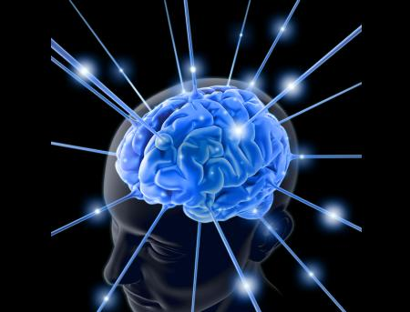
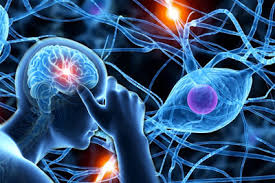

Neurociencia
Santiago, 10 de Enero de 2021

Las neurociencias son un conjunto de disciplinas científicas que estudian la estructura y la función, el desarrollo de la bioquímica, lafarmacología, y la patología del sistema nervioso y de cómo sus diferentes elementos interactúan, dando lugar a las bases biológicas de la conducta. El estudio biológico del cerebro es un área multidisciplinar que abarca muchos niveles de estudio, desde el puramente molecular hasta el específicamente conductual y cognitivo, pasando por el nivel celular (neuronas individuales), los ensambles y redes pequeñas de neuronas (como las columnas corticales) y los ensambles grandes (como los propios de la percepción visual) incluyendo sistemas como la corteza cerebral o el cerebelo, y,por supuesto, el nivel más alto del Sistema Nervioso.
Neuropsicología
Santiago, 10 de Enero de 2021

La Neuropsicología es una especialidad perteneciente al campo de las neurociencias, que estudia la relación entre los procesos mentales y conductuales y el cerebro. Constituye un punto de encuentro entre la psicología y la neurología. En los últimos años ha recibido un renovado impulso del creciente desarrollo de las ciencias cognitivas (psicología cognitiva, inteligencia artificial, lingüística), de las ciencias neurobiológicas (neuroanatomía, neurofisiología, neuroquímica) y de la explosión tecnológica con las técnicas de neuroimagen.